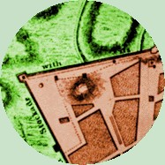

|
Gallows Hill by
Gallows Hill is a traditional term used to describe a special place in colonial Albany! The name first was used during the early 1700s when a number of new residents purchased lots "at the foot of Gallows Hill." Those properties would have been along what became South Pearl Street. By the 1720s, the location also was referenced as the site of a brickyard or brick kiln. Although the name evokes images of hangings and probably was not selected without justification, scant evidence of executions on the site appears in the community's eighteenth century record. British army maps from the 1750s and 60s showed an elevated area south of the Ruttenkill and at least some distance west of the cow path that later became Washington Street and then South Pearl Street. The map of 1765 (enhanced detail shown here) features a prominent knoll located a block west of or above the street. On July 26, 1762, the city council resolved that the "the Ground laying beyond the Fort to the west where the Gallows now stands, as far as the [?] Schyt Bergje [and also the] Grounds on the Gallows Hill be laid out in acre lots and to be disposed of at Publick Auction for twenty-one years." The duration time refers to the leasing practice favored by Albany leaders. At that time, the minutes referenced " In July 1764, Cortland Schuyler "bought" eleven acres on Gallows Hill at the head of State Street. However, within a few months, the city council; voided the sale and sold the parcel to Abraham Wendell . In September 1787, the city council acted on a growing list of complaints and proposals regarding the lots on Gallows Hill and re-assigned a number of those parcels to new owners. During the 1790s, several maps referenced a more extensive layout of lots on "Gallows Hill." These bear more investigation. During the nineteenth century, the term also referenced the high ground located south of the Ruttenkill gorge - near the site of the Colonial Albany Project offices at the Cultural Education Center. Sometimes, we call our home base on Madison Avenue "the Gallows Hill Facility!" Many other pre-industrial communities had "special places" called "Gallows Hill!" Although the name "Gallows Hill" has been used in many traditional histories of Albany, we have yet to find a definition or description of the place or direct evidence that hangings took place there before the American Revolution. We believe that the executions following the Fire of 1793 were held on the hill near the present State Capitol. Perhaps that location was called "Gallows Hill" as well! Results of a basic www.google.com search for Gallows Hill and Albany. first posted: 7/20/02; revised 2/25/11 |